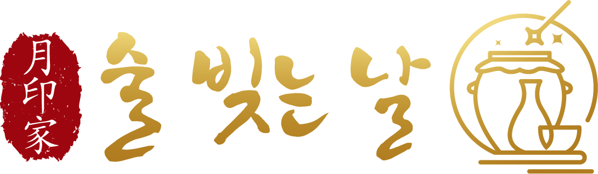

OUR STORY
월인가 '술빚는날'의 이야기
빠르게 만드는 술이 아닙니다. 충청남도 천안의 작은 양조장에서, 우리는 시간을 들여 술을 빚습니다. 우리 쌀을 씻고, 누룩을 띄우고, 발효를 기다리는 일. 달이 차고 기우는 동안, 술도 천천히 익어갑니다.
달 月, 도장 印, 집 家. 달빛이 집집마다 고요히 스며드는 밤, 마치 달이 도장처럼 찍히는 그 시간에 우리는 술을 빚습니다. 그래서 이름이 '술빚는날'입니다.
달이 집을 비추는 밤에 빚는 술 — 그 고요함과 기다림이 월인가의 정신입니다.
흔한 술이 아니라, 정성이 담긴 술 한 잔을 짓고 싶었습니다. 옛 방식 그대로, 그러나 오늘의 입맛에 맞게. 월인가 '술빚는날'은 그 마음으로 시작했습니다. 대표님 실제 창업 동기로 교체 권장
월인가의 술은 사람의 손에서 나옵니다. 매일 발효실의 온도를 살피고, 술독에 귀를 기울이는 사람 — 대표 김지은. 대표/양조인 이름·경력·사진 보강
VALUES
한 번에 끝내지 않습니다. 밑술에 덧술을 두 번 더하는 삼양주로, 서두르지 않고 빚습니다.
우리 쌀과 우리 누룩. 국산 농산물을 주원료로 한 지역특산주입니다.
달과 절기를 따라 빚어, 술 한 잔에 그 계절의 정취를 담습니다.